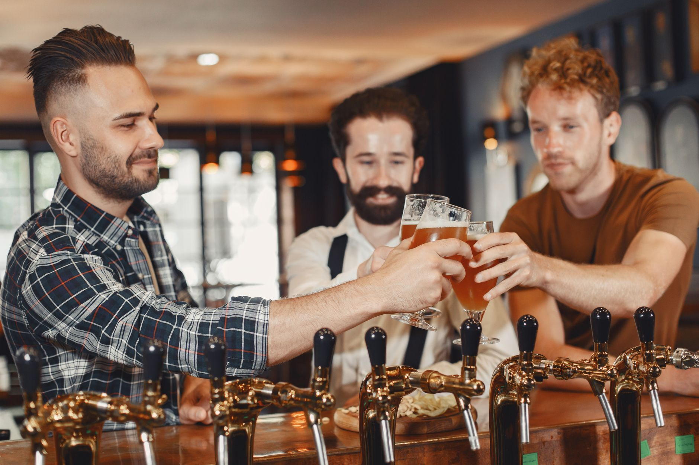
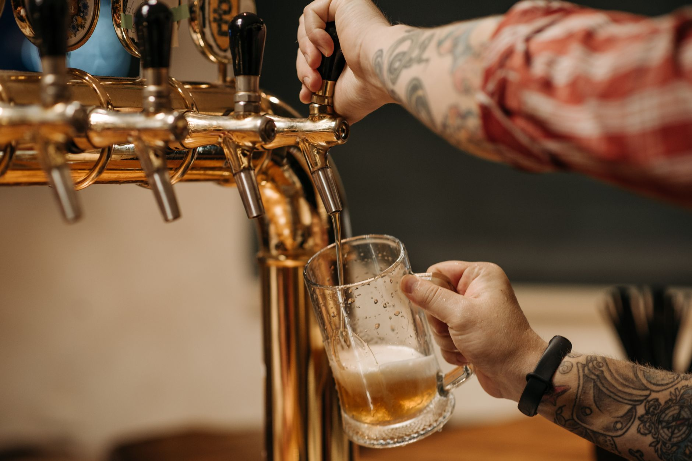
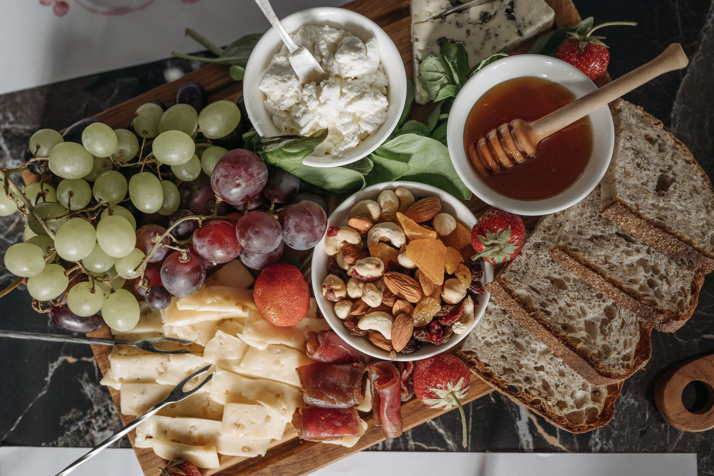
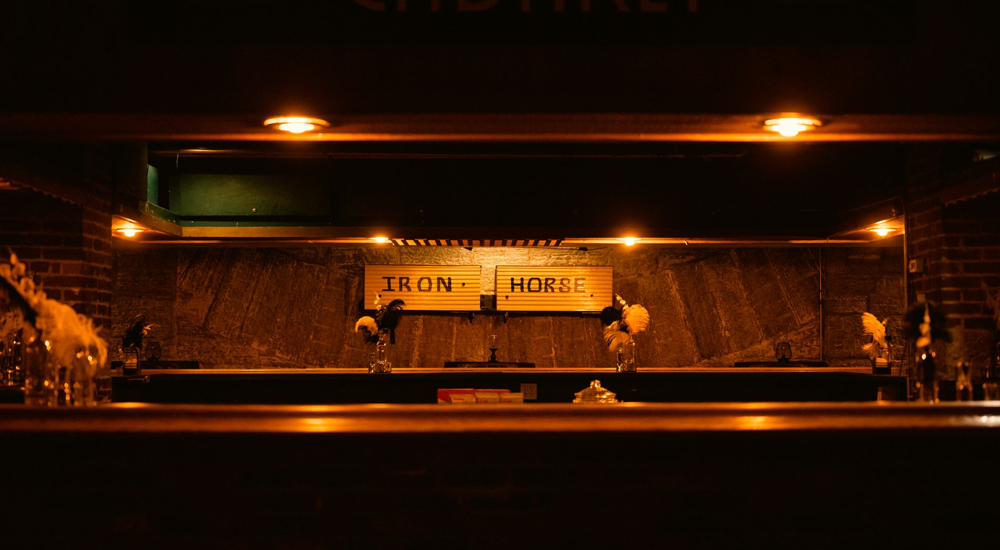
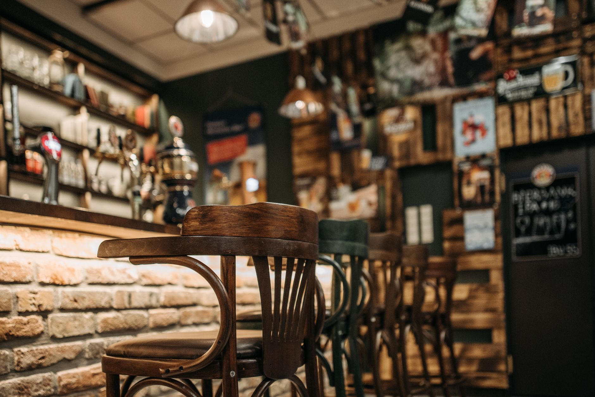

Bar à bières & vins nature · Lyon 1er
Le repaire des gones sur les pentes. Des bières qu'on choisit avec soin, des vins nature de vignerons, des planches à partager, et l'ambiance qui va avec.

L'adresse
13 rue Terme
Lyon 1er, les pentes
Les horaires
En soirée
du mardi au samedi (à confirmer)
Sur Google
Bien notés
par les habitués du quartier
Au comptoir
Une carte vivante, qui change au gré des brasseurs et des vignerons. On vous guide, selon votre soif et votre humeur.
À la pression et à la bouteille, une sélection qui tourne : brasseurs locaux, pépites artisanales, toujours bien tirées.
Une cave de vignerons, vivante et sincère, dont les cuvées du Château Saint-Louis. On adore raconter ce qu'il y a dans le verre.
Charcuterie, fromages affinés et bons produits, à picorer à plusieurs autour d'un verre.
Un comptoir où l'on se sent vite chez soi, pour l'afterwork, les copains ou refaire le monde jusqu'à la fermeture.




La cave
Sur nos étagères, des vins nature de vignerons qu'on aime, dont les cuvées du Château Saint-Louis. Des vins vivants, francs, à découvrir au verre comme à la bouteille. Dites nous ce que vous aimez, on trouve le bon.
Passer goûterOn en dit du bien
“ Super endroit, les bières sont de qualité, les propriétaires cherchent la qualité et la satisfaction client avant tout. Le rapport qualité prix est dans les meilleurs de Lyon. ”
Un client, sur Google
Venir nous voir
Adresse
13 rue Terme, 69001 Lyon
Pentes de la Croix-Rousse, métro Hôtel de Ville
Horaires
Du mardi au samedi, en soirée
horaires précis à confirmer
Réservation & privatisation
Écrivez nous sur Instagram @pintesagones69001